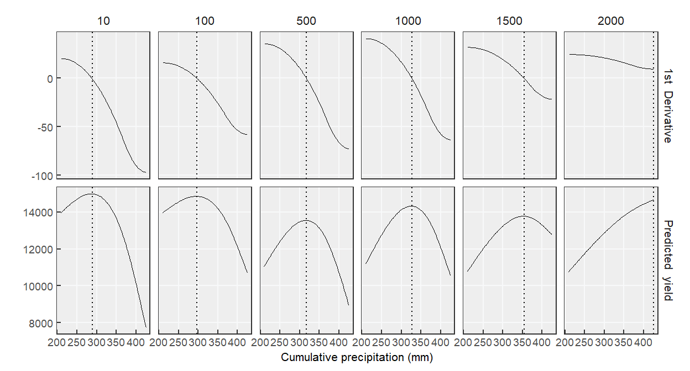

4 Spatio-temporal variation models
To assess spatio-temporal yield variation in response to precipitation within a field using both observed and predicted yield data, two methodologies will be employed:
Generalized Additive Models (GAMs): To obtain Spatially Varying Response Parameters (SVRP) across the field.
Classification and Regression Trees (CART): To classify different types of yield responses to precipitation within the field, based on the previously obtained SVRP.
4.1 Import Libraries
# Packages to be used
library_names <- c("sp", # (Bivand et al., 2012)
"sf", # (Pebesma, 2018)
"mgcv", # GAMs (Wood,2017)
"rpart", # Regression tree
"rpart.plot", # CART (Therneau et al., 2015)
"partykit",
"tidyverse") # (Wickham et al., 2019)
# Iterate over each library name
for (lib_name in library_names) {
# Check if the library is already installed
if (!require(lib_name, character.only = TRUE)) {
# If the library is not installed, install it
install.packages(lib_name, dependencies = TRUE)
# Load the library
library(lib_name, character.only = TRUE)
} else {
# If the library is already installed, load it
library(lib_name, character.only = TRUE)
}
}# Palette color figures #
grad_id <- c("#99e2b4", "#88d4ab", "#78c6a3", "#67b99a", "#56ab91",
"#469d89", "#358f80", "#248277", "#14746f", "#036666",
"#025959", "#014c4c", "#013f3f", "#013232", "#012525")
grad_bl <- c("#c2e0f0", "#b3d8ea", "#a3cfe4", "#89c2d9", "#61a5c2",
"#468faf", "#2c7da0", "#2a6f97", "#014f86", "#01497c",
"#013a63", "#012a4a", "#011d36", "#011529", "#010e1d", "#010912")
grad_MY <- c("#dad7cd", "#a3b18a", "#588157", "#3a5a40", "#344e41",
"#2c4238", "#243630", "#1c2a28")4.2 Upload data
### Obtain each datasets ###
YM_df <-
read_sf(paste0("1_Data/5_YieldPred/YM_df", FIELD_NAME, "_Ypred.shp")) %>%
pivot_longer(c(Yobs, Ypred), names_to = "Variable", values_to = "Value") %>%
mutate(Value = round(Value, 0))
pp_periods <-
read.csv(paste0("1_Data/4_CP/CP_",FIELD_NAME,".csv")) %>%
mutate(Start_moment = str_replace(Start_moment, "-", "_")) %>%
pivot_wider(names_from = c(Start_moment, Period), values_from = CR) %>%
dplyr::filter(Year %in%c(unique(YM_df$Year))) %>%
dplyr::select(Year,May_1_90) %>%
rename(CP = May_1_90)
df <- YM_df %>%
left_join(pp_periods, by = c("Year")) %>%
group_by(Variable) %>%
nest()4.3 GAMs
GAMs, which are hierarchical models, are flexible analytical frameworks for capturing complex and non-linear interactions within a data (Wood, 2017). By using GAMs, we can obtain yield responses to precipitation at the pixel level within the field. In this framework, the first level of the model describes the crop yield (\(Y_i\)) for the \(i^{th}\) observation. The crop yield (\(Y_i\)) was assumed to follow a normal distribution with expected value \(\mu_i\) and variance \(\sigma^2\):
\(Y_i \sim Normal(\mu_i, \sigma^2)\)
In the second level of the model, \(\mu_i\) was defined as:
\(\mu_i = \beta_0 + f(Lon_i, Lat_i, CP_i)\),
where \(\beta_0\) is the intercept term; and \(f(Lon_i, Lat_i, CP_i)\) is a tensor product smooth function of latitude (\(Lat_i\)), longitude (\(Lon_i\)), and cumulative precipitation (\(CP_i\)) with basis function thin plate spline for the spatial coordinates (Wood, 2003) and a cubic regression spline for cumulative precipitation variable. The complexity of the model is controlled by smoothing parameters, where k=(400,3) specifies the basis dimension limits, with 400 basis functions allocated for the interaction of spatial coordinates and 3 for cumulative precipitation.
4.3.1 Run models
## Observed yield monitor data model ##
GAM_obs <- bam(Value ~ te(X,Y, CP, bs= c("tp","cr"), k =c(400, 2.6), d = c(2,1)),
discrete = TRUE, nthreads = 16,
data = df %>%
dplyr::filter(Variable == "Yobs") %>%
unnest(data) )
#summary(GAM_obs)
## Observed yield monitor data model using sentinel-2 ##
GAM_pred <- bam(Value ~ te(X,Y, CP, bs= c("tp","cr"), k =c(400, 2.6), d = c(2,1)),
discrete = TRUE, nthreads = 16,
data = df %>%
dplyr::filter(Variable == "Ypred") %>%
unnest(data) )
#summary(GAM_pred)4.3.2 Obtain predictions
Use the original dataset to evaluate later observed versus predicted for observed yield monitor data and predicted monitor data using sentinel-2.
pred <- df %>%
mutate(pred = map2(data, Variable, ~{
if (.y == "Yobs") {
.x %>%
bind_cols(predict(GAM_obs,
df %>% dplyr::filter(Variable=="Yobs") %>% unnest(data),
se.fit = TRUE, type = "response") %>%
as.data.frame() %>%
rename("Yield_hat" = 1)) %>%
dplyr::select(ID,X,Y, Year, Value, Yield_hat, CP)
} else if (.y == "Ypred") {
.x %>%
bind_cols(predict(GAM_pred,
df %>% dplyr::filter(Variable=="Ypred") %>% unnest(data),
se.fit = TRUE, type = "response") %>%
as.data.frame() %>%
rename("Yield_hat" = 1)) %>%
dplyr::select(ID,X,Y, Year, Value, Yield_hat, CP)
} else {
.x
}
}))A dataset with more intervals of of cumulative precipitation was created (mm). For that, the minimum and maximum value of CP was obtained, in order to obtain more interval between that range.
# New dataframe in order to have more intervals
# within the range of Cum precipitation
new_df <- df %>%
mutate(df = map2(data, Variable, ~{
if (.y == "Yobs"){
.x %>%
st_drop_geometry() %>%
group_by(X,Y) %>%
mutate(min = min(CP),
max = max(CP) ) %>%
dplyr::select(X,Y, min, max) %>% distinct() %>%
mutate(CP = list(seq(min, max, 2))) %>%
unnest(CP) %>% ungroup()
} else if (.y == "Ypred") {
.x %>%
st_drop_geometry() %>%
group_by(X,Y) %>%
mutate(min = min(CP),
max = max(CP) ) %>%
dplyr::select(X,Y, min, max) %>% distinct() %>%
mutate(CP = list(seq(min, max, 2))) %>%
unnest(CP) %>% ungroup()
} else {
.x # Return the original data if the variable is not Obs or pred
}
})) %>% dplyr::select(-data)
## Prediction ##
pred_df <- new_df %>%
mutate(pred = map2(df, Variable, ~{
if (.y == "Yobs"){
.x %>%
bind_cols(predict(GAM_obs,
new_df %>% dplyr::filter(Variable =="Yobs") %>% unnest(df),
se.fit = TRUE, type = "response") %>%
as.data.frame() %>%
rename("Yield_hat" = 1)) %>%
dplyr::select(X,Y, Yield_hat,CP)
} else if (.y == "Ypred") {
.x %>%
bind_cols(predict(GAM_pred,
new_df %>% dplyr::filter(Variable =="Ypred") %>% unnest(df),
se.fit = TRUE, type = "response") %>%
as.data.frame() %>%
rename("Yield_hat" = 1)) %>%
dplyr::select(X,Y, Yield_hat,CP)
} else {
.x # Return the original data if the variable is not Obs or pred
}
}))4.3.3 Model evaluation
Metrics values
Model performance will be evaluated using the following metrics: Relative Root Mean Square Error (RRMSE%), Percentage Lack of Precision (PLP%), Percentage Lack of Accuracy (PLA%), and Mean Absolute Error (MAE, same units that variable of response). Metrics equations are below:
\[ RRMSE = \frac{\sqrt{\frac{1}{n} \sum \left(Pred_i - Obs_i \right)^2}}{\bar{Obs}} 100\ \]
\[ PLP = \frac{2 S_{Obs} S_{Pred} (1-r)}{\frac{1}{n} \sum{(Pred_i - Obs_i)^2} }* 100 \]
\[ PLA = \frac{(\bar{Obs}-\bar{Pred})^2 + (S_{Obs} - S_{Pred})^2}{\frac{1}{n} \sum{(Pred_i - Obs_i)^2} } *100 \]
\[ MAE = \frac{1}{n}\sum|Obs_i - Pred_i| \]
Lower values of RRMSE and MAE indicate better model performance. Similarly, for PLA and PLP, lower values reflect better model accuracy and precision. For instance, a PLP value of 90% and a PLA value of 10% suggest that the model predicts with higher accuracy than precision. For more details, refer to Correndo et al., 2021 and Correndo et al., 2022.
Label <- pred %>%
dplyr::select(-data) %>%
mutate(metrics = map2(pred, Variable, ~{
if (.y == "Yobs"){
.x %>%
st_drop_geometry() %>%
drop_na() %>%
mutate(RRMSE = round(metrica::RRMSE(obs=Value,pred=Yield_hat)[[1]]*100,0),
PLP = round(metrica::PLP(obs=Value, pred=Yield_hat)[[1]],0),
PLA = round(metrica::PLA(obs=Value, pred=Yield_hat)[[1]],0),
MAE = round(mean(abs(Value - Yield_hat)),0)) %>%
dplyr::select(RRMSE, PLP, PLA, MAE) %>%
distinct()
} else if (.y == "Ypred") {
.x %>%
st_drop_geometry() %>%
mutate(RRMSE = round(metrica::RRMSE(obs=Value,pred=Yield_hat)[[1]]*100,0),
PLP = round(metrica::PLP(obs=Value, pred=Yield_hat)[[1]],0),
PLA = round(metrica::PLA(obs=Value, pred=Yield_hat)[[1]],0),
MAE = round(mean(abs(Value - Yield_hat)),0)) %>%
dplyr::select(RRMSE, PLP, PLA, MAE) %>%
distinct()
} else {
.x
}
})) %>% dplyr::select(-pred) %>% unnest(metrics) %>%
pivot_longer(-Variable, names_to = "Metric", values_to = "Value") %>%
mutate(Label = paste(Metric, "=", Value))
# Prepare label positions
num_metrics <- n_distinct(Label$Metric)
y_positions <- seq(20000, by = -1000, length.out = num_metrics)
Label <- Label %>%mutate(y_position = rep(y_positions, times = n_distinct(Variable)))Plot observed vs predicted
Plot observed vs predicted for both observed yield monitor data (Yobs) and predicted yield monitor data (Ypred) using sentinel-2. The color of the points correspond to each pixel within the field.
ObsPred <- pred %>%
dplyr::select(-data) %>%
unnest(pred) %>%
group_by(X,Y) %>%
dplyr::filter(Variable != "Pgcvi") %>%
mutate(ID = cur_group_id()) %>% ungroup() %>%
ggplot()+
geom_point(aes(x = Yield_hat, y =Value, fill = ID),
shape = 21, size = 2.5,color="black",alpha=.7, show.legend=F)+
scale_fill_gradientn(colors = grad_id)+
geom_abline(intercept = 0, slope = 1, linetype = "dotted", size = 1)+
scale_x_continuous(breaks = seq(0, 20000, 5000), limits = c(0,20000))+
scale_y_continuous(breaks = seq(0, 20000, 5000), limits = c(0,20000))+
facet_wrap(~Variable)+
geom_text(data = Label,
aes(x = 0, y = y_position, label = Label), hjust = 0, size =3) +
labs(y = expression(Observed~yield~(kg~ha^-1)),
x = expression(Predicted~yield~(kg~ha^-1)))+
theme_bw()+
theme(strip.text = element_text(size = 11,family = "sans"),
strip.background = element_blank(),
panel.background = element_rect(fill = "#eeeeee"),
panel.grid = element_line(color = "#f8f9fa"),
panel.grid.minor = element_blank(),
axis.text = element_text(size = 10),
axis.title = element_text(size = 11),
axis.ticks.length=unit(-0.1, "cm"))
ObsPred
4.3.4 Spatially Varying Parameters
Obtain derivatives
Spatially varying response parameters were derived from the GAM. Maximum yield at each coordinate was determined based on the first derivative of yield response to cumulative precipitation: it was obtained at the point where the derivative crosses zero, or at the point closest to zero if the maximum is not reached. For a flat yield response, the minimum extreme of cumulative precipitation was used. Additionally, the corresponding cumulative precipitation that maximizes yield was identified.
pred_df <-
pred_df %>%
dplyr::select(-df) %>%
unnest(pred) %>%
ungroup() %>%
group_by(X,Y) %>%
mutate(ID = cur_group_id()) %>% ungroup() %>%
group_by(Variable, X,Y) %>%
mutate(CP = round(CP, 3))%>%
# Calculate derivative
mutate(der1 = c(NA, diff(Yield_hat)/diff(CP)))
write.csv(pred_df, paste0("1_Data/6_GAMs_pred/pred_",FIELD_NAME,".csv"), row.names = F)
max_CP <-
pred_df %>%
mutate(der1_sign_change = c(NA, diff(sign(der1))),
count = any(der1_sign_change != 0),
reach_max = case_when(count == TRUE ~ "yes",
TRUE ~ "no" )) %>%
dplyr::filter(der1 !=is.na(der1)) %>%
mutate(mean = mean(der1),
sd = sd(der1),
cv = abs((sd / mean) * 100),
## Variation of the 1st derivative ##
cv_range = case_when(
cv <= 80 ~ "No_var",
cv > 80 ~ "Var" )) %>%
group_by(Variable,X,Y) %>%
mutate(row_number = row_number()) %>%
# The first row where the derivative changes sign was found.
mutate(first_sign_change_row = min(row_number[der1_sign_change != 0], na.rm = TRUE)) %>%
group_by(Variable,X,Y, reach_max, cv_range) %>%
nest() %>%
mutate(
check_resp = map2(data, reach_max,~{
if (.y == "yes") {
.x %>%
dplyr::filter(row_number < first_sign_change_row) %>%
mutate(check_resp = mean(der1, na.rm = TRUE)) %>%
dplyr::select(check_resp) %>% as.data.frame() %>% unique()
} else {
.x %>%
mutate(check_resp = 0) %>%
dplyr::select(check_resp) %>% as.data.frame() %>% unique()
}
})) %>%
unnest(check_resp) %>% unnest(data) %>%
mutate(resp = case_when(check_resp < 0 ~ "negative_resp", TRUE ~ "resp")) %>%
group_by(Variable,X,Y, reach_max, cv_range, resp) %>%
nest() %>%
# dplyr::filter(reach_max == "no" & resp == "resp" )
mutate(max_CP = case_when(
## when reach maximum yield ##
reach_max == "yes" & resp == "resp" ~ data %>%
map(.,~as.data.frame(.) %>%
dplyr::filter(der1_sign_change != 0) %>%
dplyr::select(CP) %>%
rename(max_CP = CP)),
## when plateau but is negative (false maximum) ##
reach_max == "yes" & resp == "negative_resp" ~ data %>%
map(.,~as.data.frame(.) %>%
dplyr::filter(der1 != is.na(der1)) %>%
dplyr::filter(Yield_hat == max(Yield_hat)) %>%
dplyr::select(CP)%>%
rename(max_CP = CP)),
## Don't reach maximum but is not a flat resp., select the point more near to 0 ##
reach_max == "no" & cv_range == "Var" & resp == "resp" ~ data %>%
map(.,~as.data.frame(.) %>%
dplyr::filter(der1 != is.na(der1)) %>%
dplyr::filter(abs(der1) == min(abs(der1))) %>%
dplyr::select(CP)%>%
rename(max_CP = CP)),
## Flat response: select the maximum yield ##
reach_max == "no" & cv_range == "No_var" & resp == "resp" ~ data %>%
map(.,~as.data.frame(.) %>%
dplyr::filter(der1 != is.na(der1)) %>%
dplyr::filter(Yield_hat == max(Yield_hat)) %>%
dplyr::select(CP)%>%
rename(max_CP = CP)))) %>%
unnest(max_CP) %>% unnest(data) %>%
dplyr::filter(CP == max_CP) %>%
ungroup() %>%
dplyr::select(-c(mean, sd, cv, count))plot derivative to check
Plot the derivative for both observed yield (Yobs) and predicted yield (Ypred) at specific coordinates within the field to determine if the crop yield response to precipitation is consistent at those coordinates using both yields variables. For example, a negative response using Yobs in the yield data might differ significantly when compared to the Ypred response at the same coordinate, indicating potential discrepancies between the Yobs and Ypred data.
pred_df %>%
dplyr::filter(Variable == "Yobs") %>%
ungroup() %>%
dplyr::filter(ID %in% c(10,100,500,1000,1500,2000)) %>%
pivot_longer(c(Yield_hat, der1), names_to = "Var",values_to ="Val") %>%
ggplot(aes(x = CP, y = Val, group = ID))+
geom_line(linewidth = .1)+
geom_vline(aes(xintercept = CP), linetype = "dotted",
data = max_CP %>%
dplyr::filter(Variable == "Yobs") %>%
dplyr::filter(ID %in% c(10,100,500,1000,1500,2000))) +
facet_grid(Var~ID, scales = "free_y",
labeller = labeller(Var = c(Yield_hat = "Predicted yield",
der1 = "1st Derivative")))+
labs(x = "Cumulative precipitation (mm)",
y = "")+
theme_bw()+
theme(strip.background = element_blank(),
strip.text = element_text(size = 8),
panel.background = element_rect(fill = "#eeeeee"),
panel.grid = element_line(color = "#f8f9fa"),
panel.grid.minor = element_blank(),
axis.text = element_text(size = 7),
axis.title = element_text(size = 8),
axis.ticks.length=unit(-0.1, "cm"))pred_df %>%
dplyr::filter(Variable == "Ypred") %>%
ungroup() %>%
dplyr::filter(ID %in% c(10,100,500,1000,1500,2000)) %>%
pivot_longer(c(Yield_hat, der1), names_to = "Var",values_to ="Val") %>%
ggplot(aes(x = CP, y = Val, group = ID))+
geom_line(linewidth = .1)+
geom_vline(aes(xintercept = CP), linetype = "dotted",
data = max_CP %>%
dplyr::filter(Variable == "Ypred") %>%
dplyr::filter(ID %in% c(10,100,500,1000,1500,2000))) +
facet_grid(Var~ID, scales = "free_y",
labeller = labeller(Var = c(Yield_hat = "Predicted yield",
der1 = "1st Derivative")))+
labs(x = "Cumulative precipitation (mm)",
y = "")+
theme_bw()+
theme(strip.background = element_blank(),
strip.text = element_text(size = 8),
panel.background = element_rect(fill = "#eeeeee"),
panel.grid = element_line(color = "#f8f9fa"),
panel.grid.minor = element_blank(),
axis.text = element_text(size = 7),
axis.title = element_text(size = 8),
axis.ticks.length=unit(-0.1, "cm"))
Obtain SVRP
Growth rate was calculated from the start to the maximum yield, while decay rate was assessed from the maximum yield to the end. If the maximum yield is not reached, a rate of 0 is assigned, and it is noted in the dataset that the maximum yield response to cumulative rainfall was not achieved at that coordinate.
## Dataframe ##
param_df <-
pred_df %>%
dplyr::filter(der1 != is.na(der1)) %>%
left_join(max_CP %>%
dplyr::select(Variable, ID, CP, reach_max) %>%
rename(max_CP = CP), by = c("ID", "Variable")) %>%
group_by(Variable,ID) %>%
nest() %>%
mutate(
## Growth rate ##
growth_rate = data %>%
map(., ~as.data.frame(.) %>%
dplyr::filter(CP <= max_CP) %>%
mutate(growth_rate =case_when(
max_CP == min(CP)~0,
max_CP>min(CP)~round((max(Yield_hat)-min(Yield_hat))/(max(CP)-min(CP)),
3)))%>%
dplyr::select(growth_rate) %>%
unique()),
## Decay rate ##
decay_rate = data %>%
map(., ~as.data.frame(.) %>%
dplyr::filter(CP >= max_CP) %>%
mutate(decay_rate =case_when(
max_CP == max(CP)~0,
TRUE~round((max(Yield_hat)-min(Yield_hat))/(max(CP)-min(CP)),3))) %>%
dplyr::select(decay_rate) %>%
unique())) %>%
unnest(c(data,growth_rate, decay_rate)) %>%
mutate(max_Yield = round(max(Yield_hat),1)) %>%
dplyr::select(Variable,ID,X,Y,max_Yield,max_CP,
growth_rate, decay_rate, reach_max) %>%
unique() %>%
mutate(reach_max = as.factor(case_when(reach_max == "yes" ~1,
TRUE ~0)))
write.csv(param_df, paste0("1_Data/7_SVRP/param_",FIELD_NAME,".csv"), row.names = FALSE)Plot the SVRP within the field
Plot maps of each Spatially Varying Response Parameter to visualize the spatial distribution of these variables across the field.
## Path to the folder containing the SVRP files
files <- data.frame(path_CART = as.vector(list.files("1_Data/7_SVRP",
recursive = T, full.names = T,
pattern = ".csv")))## Plot and save map figures ##
Vars <- unique(YM_df$Variable)
for(v in Vars) {
map_maxY <- YM_df %>%
dplyr::filter(Variable == v) %>%
dplyr::select(ID,X,Y, geometry, Variable) %>%
unique() %>%
st_as_sf() %>%
left_join(param_df %>% dplyr::filter(Variable == v),
by = c("ID", "Variable") ) %>%
ggplot()+
geom_sf(aes(color = max_Yield), size = 0.7)+
scale_color_gradientn(colors = grad_MY,breaks = seq(2000, 24000, 2000))+
labs(color = expression(Maximum~yield~(kg~ha^-1)))+
scale_y_continuous(expand = c(.15,.15))+
scale_x_continuous(expand = c(.15,.15))+
guides(color = guide_colorbar(title.position = "top", title.hjust = 0.5)) +
theme(axis.text = element_blank(),
axis.ticks = element_blank(),
panel.background = element_rect(fill = "#7f7f7f", color = "#949494"),
panel.grid = element_line(color = "#949494"),
legend.position = "bottom",
legend.text = element_text(size = 9),
legend.title = element_text(size = 10),
legend.key.height = unit(.2, 'cm'),
legend.key.width = unit(.95, 'cm'))
map_CP <- YM_df %>%
dplyr::filter(Variable == v) %>%
dplyr::select(ID,X,Y, geometry, Variable) %>%
unique() %>%
st_as_sf() %>%
left_join(param_df %>% dplyr::filter(Variable == v),
by = c("ID", "Variable") ) %>%
ggplot()+
geom_sf(aes(color = max_CP), size = 0.7)+
scale_color_gradientn(colors = grad_bl)+
labs(color = expression(CP~maximize~yield~(mm)))+
scale_y_continuous(expand = c(.15,.15))+
scale_x_continuous(expand = c(.15,.15))+
guides(color = guide_colorbar(title.position = "top", title.hjust = 0.5)) +
theme(axis.text = element_blank(),
axis.ticks = element_blank(),
panel.background = element_rect(fill = "#7f7f7f", color = "#949494"),
panel.grid = element_line(color = "#949494"),
legend.position = "bottom",
legend.text = element_text(size = 9),
legend.title = element_text(size = 10),
legend.key.height = unit(.2, 'cm'),
legend.key.width = unit(.95, 'cm'))
map_GR <- YM_df %>%
dplyr::filter(Variable == v) %>%
dplyr::select(ID,X,Y, geometry, Variable) %>%
unique() %>%
st_as_sf() %>%
left_join(param_df %>% dplyr::filter(Variable == v),
by = c("ID", "Variable") ) %>%
ggplot()+
geom_sf(aes(color = growth_rate), size = 0.7)+
scale_color_viridis_c(option = "A", direction = -1)+
labs(color = expression(Growth~rate~(kg~ha^{-1}~mm^{-1})))+
scale_y_continuous(expand = c(.15,.15))+
scale_x_continuous(expand = c(.15,.15))+
guides(color = guide_colorbar(title.position = "top", title.hjust = 0.5)) +
theme(axis.text = element_blank(),
axis.ticks = element_blank(),
panel.background = element_rect(fill = "#7f7f7f", color = "#949494"),
panel.grid = element_line(color = "#949494"),
legend.position = "bottom",
legend.text = element_text(size = 9),
legend.title = element_text(size = 10),
legend.key.height = unit(.2, 'cm'),
legend.key.width = unit(.95, 'cm'))
map_DR <- YM_df %>%
dplyr::filter(Variable == v) %>%
dplyr::select(ID,X,Y, geometry, Variable) %>%
unique() %>%
st_as_sf() %>%
left_join(param_df %>% dplyr::filter(Variable == v),
by = c("ID", "Variable") ) %>%
ggplot()+
geom_sf(aes(color = decay_rate), size = 0.7)+
scale_color_viridis_c(option = "A", direction = -1)+
labs(color = expression(Decay~rate~(kg~ha^{-1}~mm^{-1})))+
scale_y_continuous(expand = c(.15,.15))+
scale_x_continuous(expand = c(.15,.15))+
guides(color = guide_colorbar(title.position = "top", title.hjust = 0.5)) +
theme(axis.text = element_blank(),
axis.ticks = element_blank(),
panel.background = element_rect(fill = "#7f7f7f", color = "#949494"),
panel.grid = element_line(color = "#949494"),
legend.position = "bottom",
legend.text = element_text(size = 9),
legend.title = element_text(size = 10),
legend.key.height = unit(.2, 'cm'),
legend.key.width = unit(.95, 'cm'))
map_SVP <- cowplot::plot_grid(map_maxY,map_CP, map_GR, map_DR,
nrow=1, rel_widths = c(1,1,1,1))
ggsave(paste0("3_Output/6_SVRP/mapSVP_",FIELD_NAME,"_",v, ".png"),
height = 2, width = 8.3)
}
map_SVP4.4 CART
To classify responses to cumulative precipitation within the field, Classification and Regression Tree (CART) methodology was used, which divides observations into increasingly homogeneous groups (Breiman et al., 2017). The response variable for this classification was the cumulative precipitation that maximizes yield. Explanatory variables included Maximum Yield, Growth Rate, Decay Rate, and a binary indicator of whether maximum yield was reached, derived from the GAM model.
###########################################################################
#################### FUNCTION CART to automatize CART ####################
###########################################################################
rt_fn <- function(Farm_name, var_name, data){
# Filter data for the specific crop
# Run Regression tree
rt <- rpart::rpart(max_CP ~ growth_rate + decay_rate + reach_max + max_Yield,
method = "anova",
control = rpart.control(cp = 0.05,maxdepth = 2),
data = data)
#Save CART plot
png(paste0("3_Output/7_CART/1_CART_plot/",Farm_name, "_",var_name, ".png"))
rpart.plot(rt)
dev.off()
# Get terminal node (leaf) assignments and create group names
data <- data %>%
ungroup() %>%
mutate(node = predict(rt, type = "vector"),# Add node predictions
group = factor(node)) %>%# Convert node numbers to factor for labeling
mutate(group = as.integer(group)) %>% # Ensure group is integer for sorting if needed
arrange(group) %>%# arrange by group for consistent labeling
mutate(group = paste0("G", dense_rank(group)))# Create unique group names
# Example of further usage, such as joining and summarizing
regT_df <- pred_df %>%
dplyr::filter(Variable == var_name) %>%
ungroup() %>%
dplyr::select(ID, CP, Yield_hat) %>%
left_join(data, by = "ID") %>%
group_by(group, CP) %>%
mutate(mean_Y = mean(Yield_hat),
Q975 = quantile(Yield_hat, 0.95),
Q025 = quantile(Yield_hat, 0.05)) %>%
ungroup() %>% group_by(group) %>%
mutate(q975CP = quantile(max_CP, 0.95),
q025CP = quantile(max_CP, 0.05))
write.csv(regT_df, paste0("1_Data/8_CART/CART_",Farm_name,"_",var_name,".csv"),
row.names = FALSE)
return(regT_df)
}4.4.1 Run CART
# Obtain Files
f_cart <- data.frame(path_SVP = as.vector(list.files("1_Data/7_SVRP",
recursive = T,
full.names = T,
pattern = ".csv"))) %>%
mutate(path_pred = as.vector(list.files("1_Data/6_GAMs_pred",
pattern = ".csv",
recursive = T,full.names = T))) %>%
mutate(Farm= str_remove(path_SVP, "1_Data/7_SVRP/param_"),
Farm = str_remove(Farm, ".csv"), .before = 1) %>%
## Filter the farm/field that we are testing in the moment
dplyr::filter(Farm == FIELD_NAME)Run this code that contains a function (rt_fn) previously created. rt_fn function: i) runs the CART model (rpart function) for each crop in each field; ii) Saves the CART tree figure; iii) create a dataframe splitting the data depending on the group.
for (file in 1:nrow(f_cart)){
## Upload files
Farm <- f_cart[file,1]
param_df <- read.csv(f_cart[file,2])
pred_df <- read.csv(f_cart[file,3])
## Run CART, write figures & files in folder
param_df %>%
ungroup() %>%
group_by(Variable) %>%
nest() %>%
mutate(cart = map2(.x = Variable, .y = data,
# function created previously
.f = ~rt_fn(Farm_name = Farm, var_name = .x, data = .y)))
}4.4.2 Obtain Figures
files <- data.frame(path_CART = as.vector(list.files("1_Data/8_CART",
recursive = T,
full.names = T,
pattern = ".csv"))) %>%
mutate(Farm= str_remove(path_CART, "1_Data/8_CART/CART_"),
Farm = str_remove(Farm, ".csv"),.before = 1) %>%
separate(Farm, into = c("Farm", "Variable"),sep = "_(?=[^_]+$)") %>%
## Filter the farm/field that we are testing in the moment
dplyr::filter(Farm == FIELD_NAME)Create a figure that includes a map showing the distribution of groups within the field, the yield response to precipitation within each group across the field, and the range of each Spatially Varying Response Parameter within each group.
## Obtain figures and save ##
for (file in 1:nrow(files)){
## Upload files
Farm <- files[file,1]
var_name <- files[file,2]
regT_df <- read.csv(files[file,3])
## Plot groups spatial distribution in the field
map_gr <- YM_df %>%
dplyr::filter(Variable == var_name) %>%
dplyr::select(X,Y) %>% unique() %>%
group_by(X,Y) %>%
mutate(ID = cur_group_id()) %>% ungroup() %>%
left_join(regT_df %>% dplyr::select(group, ID) %>% unique(),
by = c("ID")) %>%
ggplot()+
geom_sf(aes(color = group), size =3)+
scale_color_manual(values =c("#61a5c2", "#01497c","#011d36", "#010912"),
aesthetics = c("color", "fill"))+
labs(color = "Groups")+
scale_y_continuous(expand = c(.15,.15))+
scale_x_continuous(expand = c(.15,.15))+
guides(color = guide_legend(override.aes = list(size = 3),
title.position = "top", title.hjust = 0.5))+
theme(axis.text = element_blank(),
axis.ticks = element_blank(),
panel.background = element_rect(fill = "#7f7f7f", color = "#949494"),
panel.grid = element_line(color = "#949494"),
legend.position = "bottom",
legend.text = element_text(size = 12),
legend.title = element_text(size = 11),
legend.key.height= unit(.2, 'cm'),
legend.key.width= unit(.4, 'cm'))
ggsave(paste0("3_Output/7_CART/2_Field_classif/mapGr_",Farm,"_",var_name,".png"))
## Plot type of response
group_responses <- regT_df %>%
ggplot()+
geom_rect(data = regT_df %>%
group_by(group) %>%
dplyr::select(group, ID,q975CP, q025CP, Yield_hat) %>%
dplyr::filter(row_number() == 1) %>% unique(),
aes(xmin = q025CP, xmax = q975CP),ymin = -Inf, ymax=Inf,
fill = "#274060",alpha=.2,show.legend = F)+
geom_ribbon(aes(x = CP, ymin = Q025, ymax = Q975,fill =group),
alpha =0.9, show.legend = F)+
geom_line(aes(x = CP,y = mean_Y),
color = "Black", linewidth = 1,show.legend = F)+
geom_line(aes(x = CP,y = Q975),
color="Black", linewidth=1,show.legend =F,linetype="dashed")+
geom_line(aes(x = CP,y = Q025),
color="Black", linewidth=1,show.legend =F,linetype="dashed")+
facet_wrap(~group, nrow = 1)+
scale_color_manual(values = c("#61a5c2", "#01497c","#011d36", "#010912"),
aesthetics = c("color", "fill"))+
#scale_y_continuous(breaks = seq(0, 350, 40))+
expand_limits(y=0)+
#scale_x_continuous(breaks = seq(0, 550, 25))+
labs(x = "Cumulative precipitation (mm)",
y = expression(Predicted~yield~(kg~ha^{-1})))+
theme_bw()+
theme(strip.background = element_blank(),
strip.text = element_text(size = 11),
panel.background = element_rect(fill = "#eeeeee"),
panel.grid = element_line(color = "#f8f9fa"),
axis.text = element_text(size = 10),
axis.title = element_text(size = 11),
axis.ticks.length=unit(-0.1, "cm"))
ggsave(paste0("3_Output/7_CART/2_Field_classif/grResp_",Farm,"_",var_name,".png"),
height = 3,width = 8)
## Plot parameters
param_gr <- regT_df %>%
dplyr::select(ID,max_CP, growth_rate,decay_rate, max_Yield,group) %>%
distinct() %>%
rename("CP maximize yield" = max_CP,
"Maximum Yield" = max_Yield,
"Growth rate" = growth_rate,
"Decay rate" = decay_rate) %>%
pivot_longer(c(`Maximum Yield`,`CP maximize yield`,`Growth rate`,`Decay rate`),
names_to = "Var", values_to = "Val") %>%
mutate(Var = as.factor(Var),
Var = fct_relevel(Var,"Maximum Yield", "CP maximize yield",
"Growth rate","Decay rate")) %>%
ungroup() %>% group_by(Var, group) %>%
summarise(meanCl = mean(Val),
q975Cl = quantile(Val, .975),
q025Cl = quantile(Val, .025)) %>%
ungroup(group) %>%
mutate(mean = mean(meanCl),
difMean = meanCl - mean) %>%
ggplot(aes(y = as.factor(group), x = meanCl)) +
geom_point(size = 2)+
geom_errorbar(aes(xmin = q975Cl, xmax = q025Cl), width = 0)+
facet_wrap(~Var, scales = "free_x", ncol = 4)+
labs(y = "Group")+
theme_bw()+
theme(strip.background = element_blank(),
strip.text = element_text(size = 10),
panel.background = element_rect(fill = "#eeeeee"),
panel.grid = element_line(color = "#f8f9fa"),
axis.text = element_text(size = 9),
axis.title = element_text(size = 10),
axis.ticks.length=unit(-0.1, "cm"),
axis.title.x = element_blank())
ggsave(paste0("3_Output/7_CART/2_Field_classif/paramGr_",Farm,"_",var_name,".png"),
height = 2.8,width = 8)
}## Saving 7 x 5 in image
## `summarise()` has grouped output by 'Var'. You can override using the `.groups` argument.
## Saving 7 x 5 in image
## `summarise()` has grouped output by 'Var'. You can override using the `.groups` argument.
4.5 Reference
Bivand R, Pebesma E, Gomez-Rubio V (2013). Applied spatial data analysis with R, Second edition. Springer, NY. https://asdar-book.org/.
Pebesma E (2018). Simple Features for R: Standardized Support for Spatial Vector Data. The R Journal, 10(1), 439446. doi:10.32614/RJ-2018-009, https://doi.org/10.32614/RJ-2018-009.
Correndo, A. A., Hefley, T. J., Holzworth, D. P., & Ciampitti, I. A. (2021). Revisiting linear regression to test agreement in continuous predicted-observed datasets. Agricultural Systems, 192, 103194.
Correndo, A. A., Rosso, L. H. M., Hernandez, C. H., Bastos, L. M., Nieto, L., Holzworth, D., & Ciampitti, I. A. (2022). metrica: an R package to evaluate prediction performance of regression and classification point-forecast models. Journal of Open Source Software, 7(79), 4655.
Therneau T, Atkinson B (2022). rpart: Recursive Partitioning and Regression Trees. R package version 4.1.19, https://CRAN.R-project.org/package=rpart.
Wickham H, Averick M, Bryan J, Chang W, McGowan LD, Franois R, Grolemund G, Hayes A, Henry L, Hester J, Kuhn M, Pedersen TL, Miller E, Bache SM, Mller K, Ooms J, Robinson D, Seidel DP, Spinu V, Takahashi K, Vaughan D, Wilke C, Woo K, Yutani H (2019). Welcome to the tidyverse. Journal of Open Source Software, 4(43), 1686. doi:10.21105/joss.01686.
Wood, S.N., 2003. Thin Plate Regression Splines. Journal of the Royal Statistical Society Series B: Statistical Methodology 65, 95114. https://doi.org/10.1111/1467-9868.00374
Wood, S.N., 2017. Generalized Additive Models: An Introduction with R, 2nd ed.Chapman and Hall/CRC. https://doi.org/10.1201/9781315370279